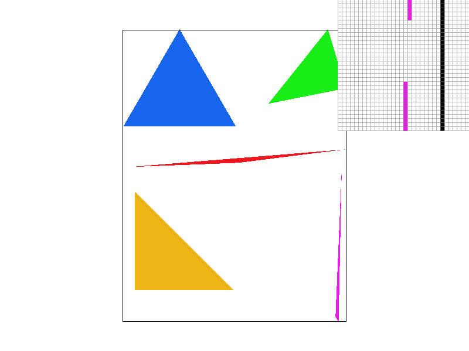
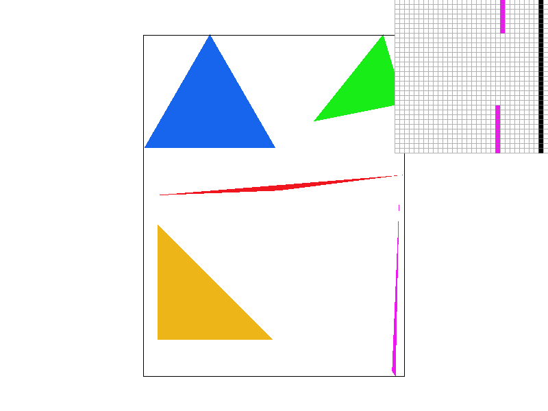
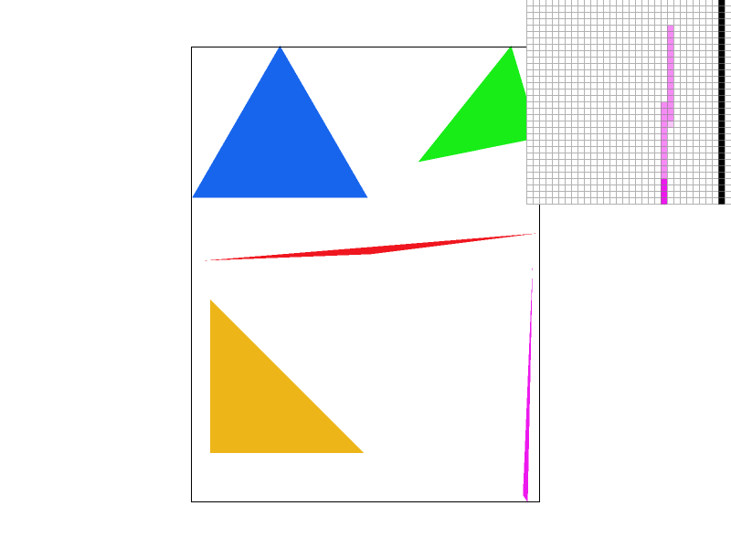
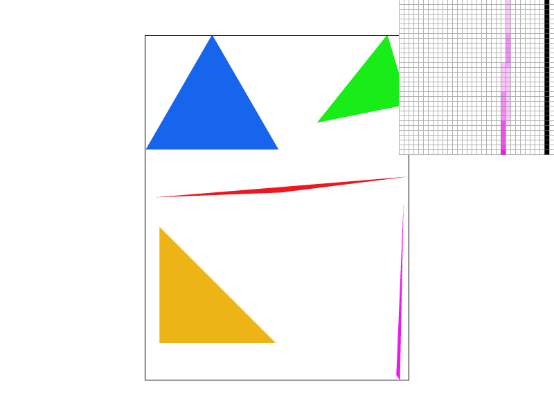
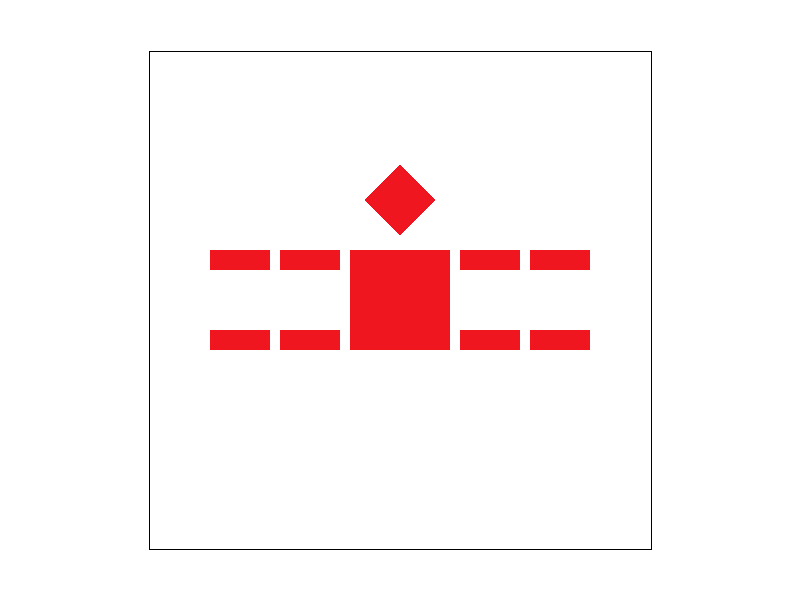
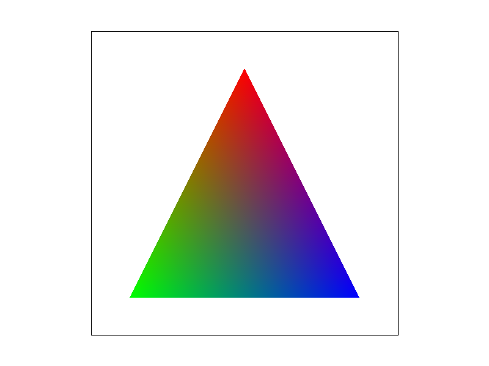
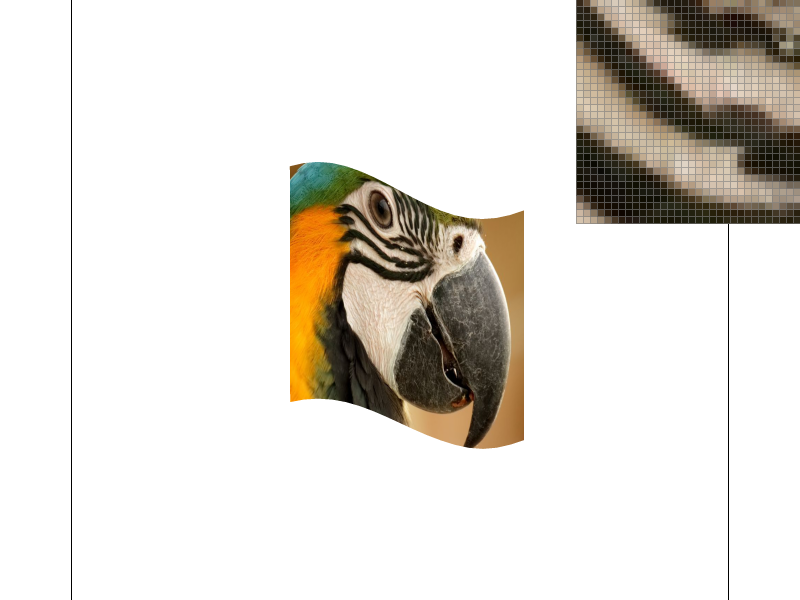
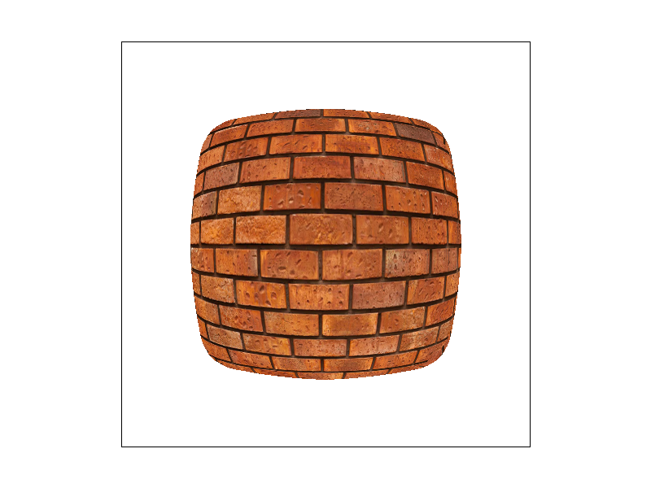

CS184/284A Spring 2025 Homework 1 Write-Up
Link to webpage: cal-cs184-student.github.io/hw-webpages-MarioIshac/hw1/index.html
Link to GitHub repository: cal-cs184-student/hw1-rasterizer-mario-ishac
Overview
In this assignment, I implemented full triangle rasterization pipeline capable of rendering antialiased, textured images with configurable sampling techniques. Starting from basic single-color triangle rasterization, I extended the renderer to support supersampling for antialiasing, barycentric interpolation for smooth color blending, geometric transformations, texture mapping with nearest and bilinear filtering, and mipmapped level sampling to reduce aliasing during minification. Developed better understanding of how sampling decisions impact visual quality and performance, and how there are multiple layers in the pipeline we can tweak to achieve the tradeoffs we want.Task 1: Drawing Single-Color Triangles
Walk through: My algorithm rasterizes a triangle by first calculating the bounding box (min and max X and Y coordinates). Then for every pixel, it calculates the 0.5 offset center along both X and Y axis and then does the point-in-triangle test demonstrated in lecture via three edge equations. If all three equations give same sign for this test, means inside triangle so we call `fill_pixel`.
No worse than one that checks each sample within the bounding box because we only focus within the min and max X and Y as bounds of the for loops, which represent smallest possible encompassing rectangle. Majority of the framebuffer is pruned away as a result.
|
 |
Task 2: Antialiasing by Supersampling
Supersampling is very useful because rather than pixel coverage being a binary decision, we can fill it based on an averaged out coverage from subpixels within the pixels (contingent on the sample rate). Therefore, shifts from coverage to no coverage become smooth, reducing "jagged" edges.
To support supersampling, I primarily needed to scale `sample_buffer` size by `sample_rate` to accomodate the sub-pixel granularity. All setters also modified to be aware of this. Then, in the rasterization process, on top of the outer loop pair iterating over x and y, needed to set up nested loop to iterate through the sub-pixels, do the triangle tests, and fill sub-pixel level `sample_buffer` accordingly. Finally, in resolution to framebuffer process, accumulate the sub-samples, average out, and write the final downsampled color to the frame buffer.
|
 |
 |
 |
Observations: The thin north corner of the skinny purple triangle is made discontinuous in sample rate 1, smoother in sample rate 4, and fully present in sample rate 16. These results are observed because as sample rate increases, the sub-pixel granularity becomes finer, coverage accuracy increases and fine details of the images become more likely to be captured.
Task 3: Transforms
In my custom "my_robot.svg", I added rotations to the legs to make him do the splits!

Task 4: Barycentric coordinates
Barycentric coordinates enable us to express any point within a triangle as a weighted combination of values at its three vertices. The weights in this linear combination always sum to 1, and represent how far along this position is along relative to the vertex that weight is for. For our rasterizer, the values at these vertices are colors, so barycentric coordinates allow us to do smooth color interpolation across the entire image.
|
 |

|
Task 5: "Pixel sampling" for texture mapping
Pixel sampling is the process of determining what color a screen pixel should take from a texture image. Since texture coordinates (u, v) are continuous but textures are stored as discrete texels, we need a method to convert a given (u, v) into a color value.
In my implementation, I first computed (u, v) at each sample using barycentric interpolation of the triangle's vertex UVs. I then scaled these coordinates by the texture's width and height to move into texture space. From there, I evaluated the color using one of two pixel sampling methods:
- Nearest Neighbor: Chooses the single texel closest to the
(u, v)coordinate. This is fast but produces blocky results when textures are magnified. - Bilinear: Fetches the 4 surrounding texels and linearly interpolates between them in both directions. This smooths the texture and reduces visible blockiness at a small performance cost.
|
|
|
|
|
 |
Relative Differences: In the screenshots above, nearest sampling at 1 sample per pixel produces jagged, stepped edges. Increasing to 16 samples per pixel improves geometric smoothness, but the texture still appears blocky because each sub-sample snaps to a single texel. Bilinear sampling produces smoother results because it blends neighboring texels, but at 1 sample per pixel lacks accurate geometric coverage. Combining bilinear sampling with 16 samples per pixel gives the smoothest result overall.
When is the difference large? The difference between nearest and bilinear sampling is most noticeable when a texture is magnified or heavily distorted. In these cases, nearest sampling causes visible pixelation as multiple screen pixels map to the same texel, while bilinear smooths the transitions between texels.
Task 6: "Level Sampling" with mipmaps for texture mapping
Level sampling is sampling from a mipmap determined by projected size of texture on screen. The less screen space the projected texture occupies, the lower dimensionality (and therefore more efficient) mipmap we can use. This is in contrast to sampling from the source resolution each time, which slows down computation when detail will be thrown away. I implemented this for texture mapping by adding support for approximating the pixel footprint of the projected texture by measuring how much (u, v) changes across one pixel in screen space, which is then run through log2 for a continuous mipmap level. Then, in the sampling of this mipmap, I added support for `L_ZERO`, `L_NEAREST`, and `L_LINEAR` level sample methods (with the latter actually looking at another mipmap level too based on floor / ceiling combo, for full trilinear support given prior bilinear pixel sampling support). Finally, I updated the sample parameters in `rasterize_textured_triangle` to provide the necessary information for the mimap level determination.
Tradeoff breakdown for different sampling techniques implemented
- Pixel Sampling (Nearest vs. Bilinear): Nearest is fastest option since it reads a single texel, but it produces pixelated results. Bilinear sampling reads four texels and interpolates between them, reducing blockiness and minor aliasing artifacts. Compute time is slightly higher, but memory usage is the same for both.
- Level Sampling (L_ZERO vs. L_NEAREST vs. L_LINEAR):
L_ZEROis fastest but causes severe aliasing when textures shrink.L_NEARESTselects the closest mip level, reducing minification artifacts with slight performance cost.L_LINEAR(trilinear filtering) blends between two mip levels (floor and ceiling in my implementation) for smoother transitions, but requires twice the mip-level samples. Mipmapping increases memory usage (~33% overhead) but provides strong antialiasing when textures are far away. - Supersampling (Samples per Pixel): Increasing sample rate improves overall antialiasing by better approximating pixel coverage, reducing jagged edges and shading artifacts. However, cost scales directly with the sample rate: framebuffer size and computation time are both proportional to the sample rate.
For the comparisons below, I chose a high-contrast brick texture found online.
|
|
 |
|
|
|